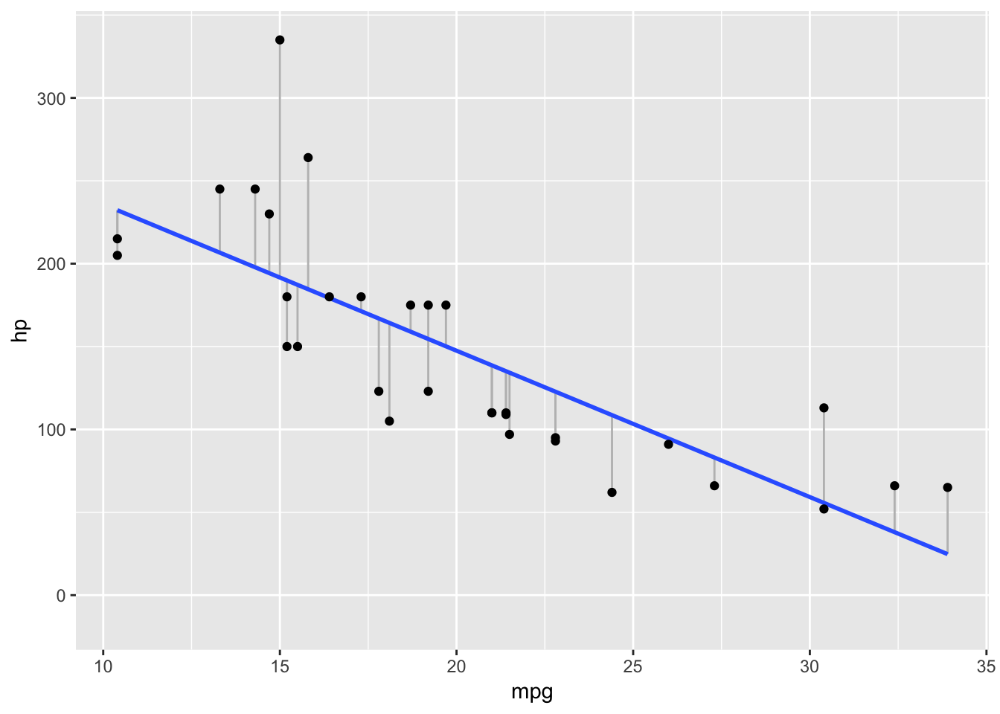
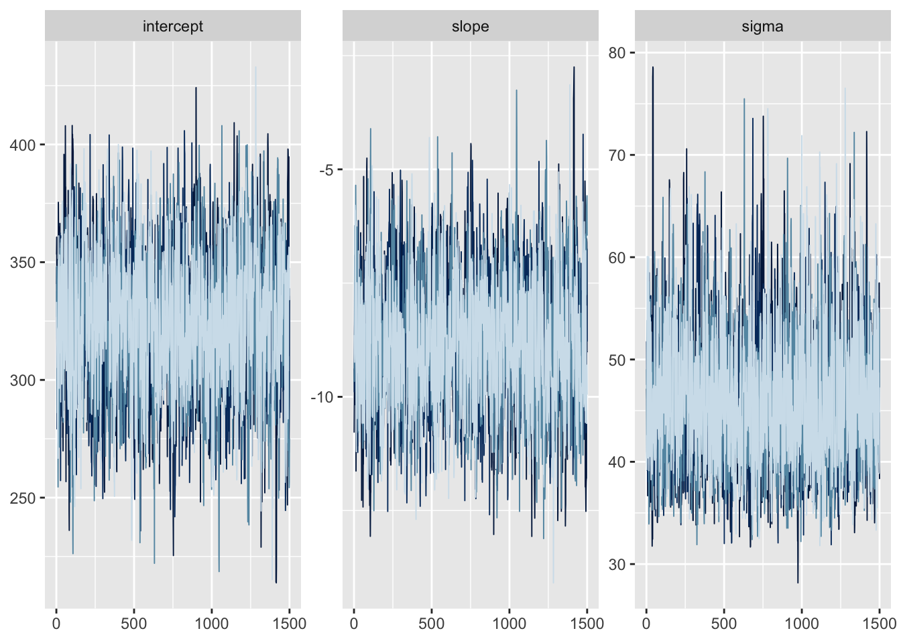
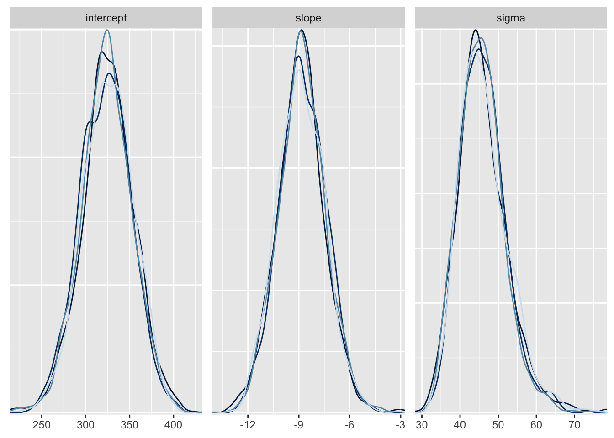
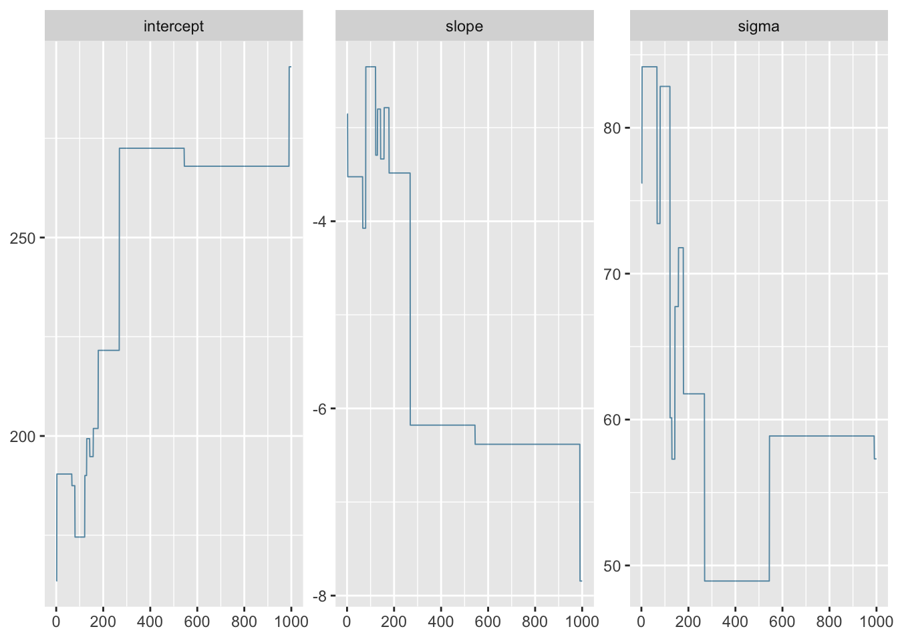
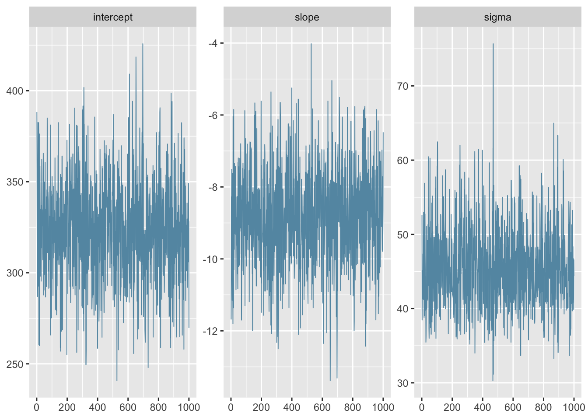
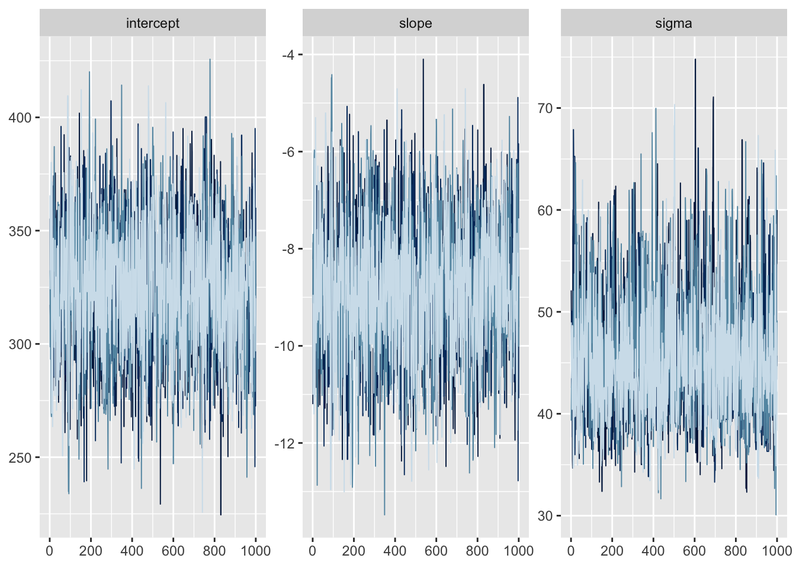
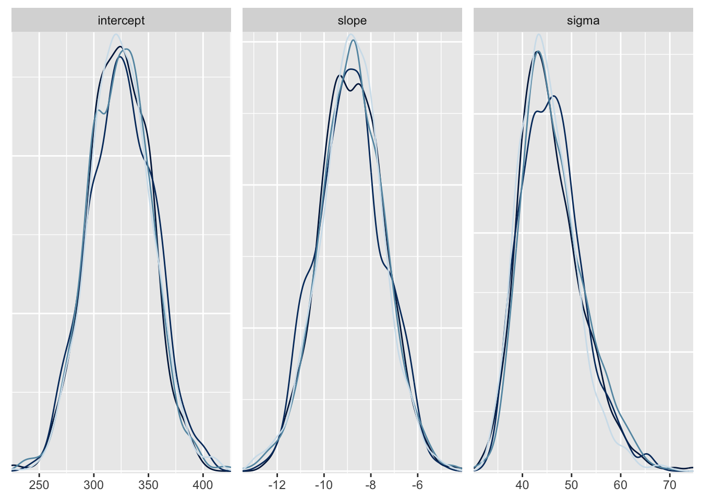
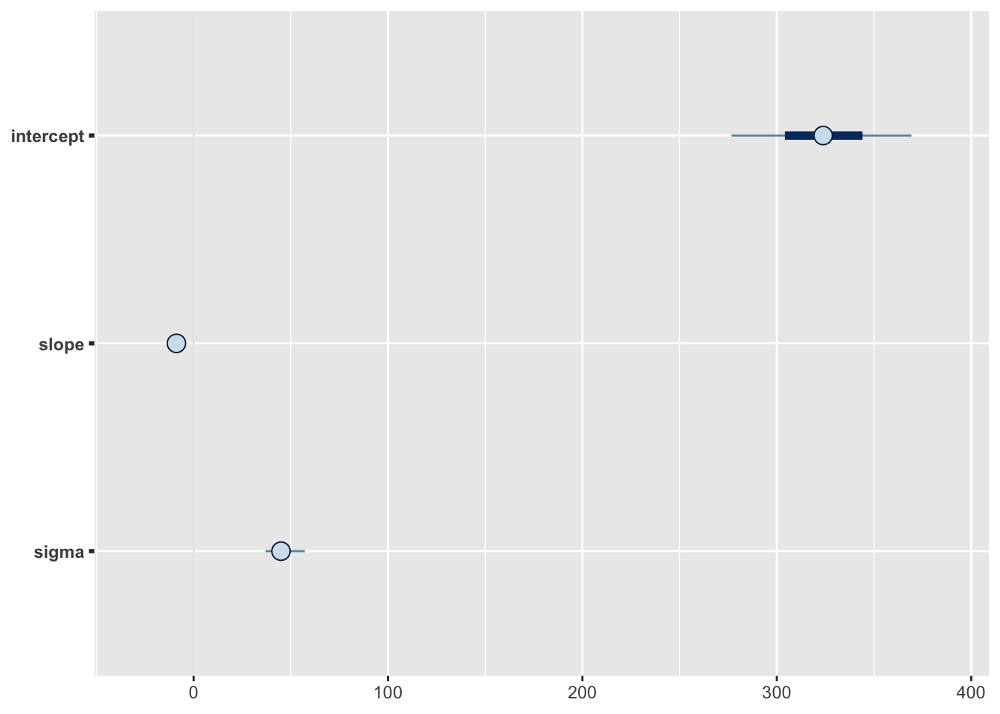
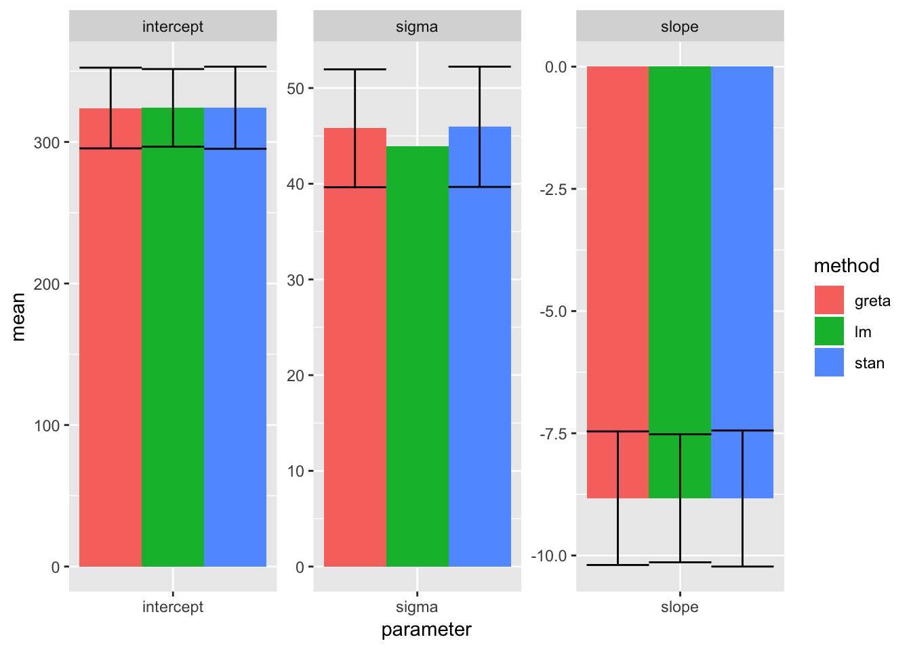

タイトルの通り、gretaに少し触れてみたメモ。 公式曰く、‘gretaはモデルをRに直書きできるから他言語を学ぶ必要はないし、TensorFlowを使っていて大規模データに対してもGPUを使った高速推定が可能’とのこと。
Stanの勉強も兼ねて、一次線形回帰モデルの係数の推定をstats::lm、{rstan}、{greta}で比べる。 サンプルデータとしてmtcarsを用い、\(hp\) (horsepower; 馬力) を\(mpg\) (miles per gallon; 燃費) で回帰する。
準備
# install.packages("DiagrammeR") # install required package
# install.packages("greta") # CRAN version
# devtools::install_github("greta-dev/greta") # github version
# greta::install_tensorflow() # install tensorflow
packageVersion("greta")## [1] '0.2.4'ある程度使ってから気づいたが、CRAN版のgreta (ver. 0.2.3) ではMCMCのchainが設定できない。 github版 (ver. 0.2.4) にはchain機能が実装済みなのでそっちの方がよさそう。
lm
通常のstats::lm。
library(tidyverse)
library(magrittr)
library(broom)
library(knitr)
lm_result <-
mtcars %>%
lm(data =., hp ~ mpg)
mtcars %>%
modelr::add_predictions(model = lm_result) %>%
ggplot(aes(mpg, hp)) +
geom_segment(aes(xend = mpg, yend = pred), col = "grey") +
geom_smooth(method = "lm", fill = NA) +
geom_point()
lm_coefs <-
lm_result %>%
tidy %>%
transmute(method = "lm", parameter = c("intercept", "slope"), mean = estimate, sigma = std.error) %>%
add_row(method = "lm", parameter = "sigma", mean = summary(lm_result)$sigma)
summary(lm_result)
kable(lm_coefs)##
## Call:
## lm(formula = hp ~ mpg, data = .)
##
## Residuals:
## Min 1Q Median 3Q Max
## -59.26 -28.93 -13.45 25.65 143.36
##
## Coefficients:
## Estimate Std. Error t value Pr(>|t|)
## (Intercept) 324.08 27.43 11.813 8.25e-13 ***
## mpg -8.83 1.31 -6.742 1.79e-07 ***
## ---
## Signif. codes: 0 '***' 0.001 '**' 0.01 '*' 0.05 '.' 0.1 ' ' 1
##
## Residual standard error: 43.95 on 30 degrees of freedom
## Multiple R-squared: 0.6024, Adjusted R-squared: 0.5892
## F-statistic: 45.46 on 1 and 30 DF, p-value: 1.788e-07| method | parameter | mean | sigma |
|---|---|---|---|
| lm | intercept | 324.082314 | 27.433296 |
| lm | slope | -8.829731 | 1.309585 |
| lm | sigma | 43.945255 | NA |
回帰係数とy切片はおよそ-8.8と324。 燃費のいい車ほど馬力は低く、1単位の\(mpg\)上昇は8.8単位の\(hp\)低下と対応するという関係。
Stan
次に{rstan}。
library(rstan)
model_stan <-'
data{
int N;
vector[N] X;
vector[N] Y;
}
parameters{
real intercept;
real slope;
real<lower=0> sigma;
}
model{
Y ~ normal(X * slope + intercept, sigma);
}
'
stan_data <-
list(N = nrow(mtcars),
X = mtcars$mpg,
Y = mtcars$hp)
stan_result <-
stan(model_code = model_stan, data = stan_data,
iter = 2000, warmup = 500, chains = 4, seed = 1)
# stanの結果を保存
write_rds(stan_result, path = "~/Dropbox/page/data/greta_hands_on/stan.rdata")トレースと事後分布を可視化し、summaryを確認する。
library(rstan)
library(bayesplot)
theme_set(theme_grey())
stan_result <- read_rds("../../data/greta_hands_on/stan.rdata")
stan_result_array <- as.array(stan_result)
mcmc_trace(stan_result_array, pars = c("intercept", "slope", "sigma")) + guides(color = F)
mcmc_dens_overlay(stan_result_array, pars = c("intercept", "slope", "sigma")) + guides(color = F)
収束確認のために、Rhatを見る。 アヒル本では文献を引用して「chain数が3以上ですべてのパラメータで\(\hat{R} < 1.1\)」であることを収束の判断基準に挙げている (孫引き)。 meanおよびsdはそれぞれMCMCサンプルの平均値 (事後平均) および標準偏差。
stan_result %>%
summary %$%
summary %>%
kable| mean | se_mean | sd | 2.5% | 25% | 50% | 75% | 97.5% | n_eff | Rhat | |
|---|---|---|---|---|---|---|---|---|---|---|
| intercept | 324.188768 | 0.6765359 | 29.022715 | 266.79422 | 304.811821 | 324.408970 | 343.774542 | 379.951778 | 1840.324 | 1.001825 |
| slope | -8.834848 | 0.0325862 | 1.391464 | -11.55225 | -9.763364 | -8.856368 | -7.906442 | -6.095332 | 1823.378 | 1.001173 |
| sigma | 45.950392 | 0.1216145 | 6.283672 | 35.51531 | 41.617182 | 45.334334 | 49.554094 | 60.315368 | 2669.662 | 1.000769 |
| lp__ | -133.872277 | 0.0313486 | 1.303514 | -137.17302 | -134.484347 | -133.539319 | -132.923267 | -132.388403 | 1728.997 | 1.001453 |
あとで比較しやすいように整形する。
stan_coefs <-
stan_result %>%
tidy %>%
transmute(method = "stan", parameter = term, mean = estimate, sigma = std.error)
kable(stan_coefs)| method | parameter | mean | sigma |
|---|---|---|---|
| stan | intercept | 324.188768 | 29.022715 |
| stan | slope | -8.834848 | 1.391464 |
| stan | sigma | 45.950392 | 6.283672 |
stanfitオブジェクト (stan_result) にbroom::tidy()すると元はsd記載だったカラムがstd.errorになるのは仕様でいいのだろうか？
stan_result %>%
tidy %>%
kable| term | estimate | std.error |
|---|---|---|
| intercept | 324.188768 | 29.022715 |
| slope | -8.834848 | 1.391464 |
| sigma | 45.950392 | 6.283672 |
greta
最後に{greta}。 ほぼget startedの写経。
- 曖昧な理解メモ
- Greta package?より
- TensorFlowはleap-frogでhamilton方程式を解くときに上限回数を設けている。
- stanは複雑なモデル (確率分布の裾が広いモデル) では裾までgreedyに評価してしまうため、相対的にgretaが有利になる。
- Greta package?より
modeling
library(greta)
# 説明変数と被説明変数を指定 = stanのdata
X <- greta::as_data(mtcars$mpg)
Y <- greta::as_data(mtcars$hp)
# 事前分布を指定 = stanのparameters
# Stanと違って指定必須
intercept <- greta::uniform(-1000, 1000)
slope <- greta::uniform(-1000, 1000)
sigma <- greta::uniform(0, 2000)
# 数式で計算 = stanのtransform
mean <- intercept + slope * X
# 尤度計算 = stanのmodel
# Yを平均・標準偏差で記述する
distribution(Y) <- greta::normal(mean, sigma)
# モデルを作成
greta_model <- greta::model(intercept, slope, sigma)モデルのほとんどRネイティブな文法で記述できるので、馴染みやすい。 また、作成したmodeをplotに投げると、{DiagrammeR}でいい感じにモデル構造を図示してくれる。
# plot(greta_model) # localではこれでOK
DiagrammeR::render_graph(plot(greta_model)) # knitする場合はこっちモデル図示だけは{greta}で出して、実際は{rstan}でもよさそう。
fitting
まずは1 chainでMCMCを実行して、結果を確認。 そこそこ時間がかかる (~ 500 samples / min)。
# 時間がかかるのでknit時には非実行
if(F){
set.seed(2018060001)
greta_result_short <- greta::mcmc(greta_model, n_samples = 1000, warmup = 50, chains = 1)
write_rds(greta_result_short, path = "~/Dropbox/page/data/greta_hands_on/1chain_short.rdata")
}
greta_result_short <- read_rds("../../data/greta_hands_on/1chain_short.rdata")
mcmc_trace(greta_result_short)
warmupが短いとsamplingを伸ばしても、遷移の進みが悪い。
warmupを伸ばしてみると、きちんと収束した。 warmup期間でのサンプルからHMCのステップサイズやステップ数を決めているのだろうか。
if(F){
set.seed(2018060001)
greta_result_long <- greta::mcmc(greta_model, n_samples = 1000, warmup = 1000, chains = 1)
write_rds(greta_result_long, path = "~/Dropbox/page/data/greta_hands_on/1chain_long.rdata")
}
greta_result_long <- read_rds(path = "../../data/greta_hands_on/1chain_long.rdata")
mcmc_trace(greta_result_long)
4 chainにして再度MCMC、trace plotなどを確認。
if(F){
set.seed(2018060001)
greta_result <- greta::mcmc(greta_model, n_samples = 1000, warmup = 1000, chains = 4)
write_rds(greta_result, path = "~/Dropbox/page/data/greta_hands_on/4chain.rdata")
}
greta_result <- read_rds(path = "../../data/greta_hands_on/4chain.rdata")
mcmc_trace(greta_result) + guides(color = F)
mcmc_dens_overlay(greta_result) + guides(color = F)
mcmc_intervals(greta_result)
よさそう。
要約統計量などを確認し、係数を整形する。
summary(greta_result)
# 比較用に整形。
greta_coefs <-
greta_result %>%
summary %>%
.[[1]] %>%
data.frame() %>%
rownames_to_column() %>%
transmute(method = "greta", parameter = rowname, mean = Mean, sigma = SD)
kable(greta_coefs)##
## Iterations = 1:1000
## Thinning interval = 1
## Number of chains = 4
## Sample size per chain = 1000
##
## 1. Empirical mean and standard deviation for each variable,
## plus standard error of the mean:
##
## Mean SD Naive SE Time-series SE
## intercept 323.984 28.505 0.45071 0.5560
## slope -8.828 1.367 0.02161 0.0275
## sigma 45.792 6.162 0.09743 0.1427
##
## 2. Quantiles for each variable:
##
## 2.5% 25% 50% 75% 97.5%
## intercept 268.93 304.145 323.844 344.085 380.487
## slope -11.45 -9.753 -8.823 -7.911 -6.175
## sigma 36.03 41.456 44.968 49.339 59.934| method | parameter | mean | sigma |
|---|---|---|---|
| greta | intercept | 323.984153 | 28.505132 |
| greta | slope | -8.827826 | 1.366599 |
| greta | sigma | 45.791866 | 6.161938 |
Bayesianにもそうでない人にも優しいJAGS系の出力で、\(\hat{R}\)は表示されない。
Empiricalな統計量の解釈について理解が浅い。 ここを参照すると、
Naive SEはそのままMCMCサンプルから計算した標準誤差。Time-series SEはNaive SEから自己相関を補正したもの。
とある。 Stanでは、自己相関から判断して算出した有効なサンプルサイズ n (n_eff) を計算して、se_mean = sd / sqrt(n_eff)としている。
\(\hat{R}\)の計算
MCMCの勉強も兼ねて、手を動かす。
\(\hat{R}\) (potential scale reduction統計量) でやることは分散分析と概ね一緒。 長さ\(N\)の\(M\)本のマルコフ連鎖の\(\theta{m}^{(n)}\)について、サンプル (= 連鎖) 間の分散\(B\)は以下の式で計算される (Stanマニュアル)。
\[ B = \dfrac{N}{M-1}\sum_{m = 1}^{M}(\overline{\theta}_m^{(•)} - \overline{\theta}_{•}^{(•)})^2 \] ただし、 \[ \overline{\theta}_{m}^{(•)} = \dfrac{1}{N}\sum_{n=1}^{N}\theta_m^{(n)}, \] \[ \overline{\theta}_{•}^{(•)} = \dfrac{1}{M}\sum_{m=1}^{M}\theta_m^{(•)} \]
サンプル内分散\(W\)は以下の式で計算される。 \[ W = \dfrac{1}{M}\sum_{m = 1}^{M}s_m^2 \] ただし、 \[ s_m^2 = \dfrac{1}{N-1}\sum_{n = 1}^{N}(\theta_m^{(n)} - \overline{\theta}_{m}^{(•)})^2 \] 分散の推定量\(\widehat{var}^+(\theta|y)\)および\(\hat{R}\)は、それぞれ以下の式で計算される。 \[ \widehat{var}^+(\theta|y) = \dfrac{N-1}{N}W + \dfrac{1}{N}B \] \[ \hat{R} = \sqrt{\dfrac{\widehat{var}^+(\theta|y)}{W}} \]
以下、\(\hat{R}\)を地道に計算する。 配列計算だとapplyが活きる。
calc_rhat <-
function(greta_result){
# 下準備
M <- length(greta_result) # chain数
N <- nrow(greta_result[[1]]) # chain長さ
param <- greta_result[[1]] %>% attributes %$% dimnames %>% .[[2]] # parameter名
# greta出力を配列化
greta_array <-
greta_result %>%
map(function(x){
dim(x) <- c(dim(x), 1) # abind用に次元を1つ増やす
return(x)
}) %>%
abind::abind()
# Rhat計算
mean_theta <- apply(greta_array, 2, mean) # 標本平均
mean_theta_m <- apply(greta_array, 2:3, mean) # 各chainの平均
residual_inter_chains <- mean_theta_m - mean_theta # chain平均の標本平均からの偏差
residual_intra_chains <- (greta_array - rep(mean_theta_m, each = N)) # 各サンプルのchain平均からの偏差
s_m_2 <- apply(residual_intra_chains^2, 2:3, sum) / (N - 1)
B <- N / (M - 1) * apply(residual_inter_chains^2, 1, sum)
W <- apply(s_m_2, 1, mean)
var_hat <- (N - 1) * W / N + B / N
r_hat <- sqrt(var_hat / W)
# 出力
set_names(r_hat, param) %>%
data.frame(Rhat = .) %>%
return()
}
calc_rhat(greta_result) %>%
kable| Rhat | |
|---|---|
| intercept | 1.0002076 |
| slope | 0.9999344 |
| sigma | 1.0039574 |
3パラメータの\(\hat{R}\) < 1.1を確認。 ただし、log posterior (Stanの\(lp\_\_\)) は取り出せていないので、収束したと言い切るのはよろしくない。
stats::lm / {rstan} / {greta}による回帰係数の点推定値の比較
bind_rows(lm_coefs,
stan_coefs,
greta_coefs) %>%
ggplot(aes(parameter, mean, ymin = mean - sigma, ymax = mean + sigma, fill = method)) +
geom_bar(stat = "identity", position = position_dodge()) +
geom_errorbar(position = position_dodge(.9)) +
facet_wrap(~ parameter, scale = "free")
概ねよさそう。 sigma (回帰残差の標準偏差) が{rstan}、{greta}で過大評価気味？
雑感
{greta}のいいところ
- モデルの書き方が直感的で使いやすい
- モデル構造の可視化が便利
{greta}のだめなところ
- 情報が充実していない (これからに期待？)
- 今回のような簡単なモデルだと、stanのほうが圧倒的に早い
- デフォルトで\(\hat{R}\)が出ない
- P値 & 有意差みたいなもので、これだけ見ればOKというものでもないのだろうけれども不便
chain機能がない？- CRAN版 (ver. 0.2.3) にないだけでgithub版 (ver. 0.2.4) には実装済み
参考
greta
greta-dev/greta | github
RStan
StanとRでベイズ統計モデリング
Bayesian Data Analysis | Gelman et al. (2013)
Stanモデリング言語: ユーザーガイド・リファレンスマニュアル
Greta package? Practical session: MCMC diagnostics
Session Info
devtools::session_info()## setting value
## version R version 3.5.0 (2018-04-23)
## system x86_64, darwin15.6.0
## ui X11
## language (EN)
## collate en_US.UTF-8
## tz Australia/Brisbane
## date 2018-06-02
##
## package * version date source
## abind 1.4-5 2016-07-21 CRAN (R 3.5.0)
## assertthat 0.2.0 2017-04-11 CRAN (R 3.5.0)
## backports 1.1.2 2017-12-13 CRAN (R 3.5.0)
## base * 3.5.0 2018-04-24 local
## base64enc 0.1-3 2015-07-28 CRAN (R 3.5.0)
## bayesplot * 1.5.0 2018-03-30 CRAN (R 3.5.0)
## bindr 0.1.1 2018-03-13 CRAN (R 3.5.0)
## bindrcpp * 0.2.2 2018-03-29 CRAN (R 3.5.0)
## blogdown 0.6 2018-04-18 CRAN (R 3.5.0)
## bookdown 0.7 2018-02-18 CRAN (R 3.5.0)
## brew 1.0-6 2011-04-13 CRAN (R 3.5.0)
## broom * 0.4.4 2018-05-24 Github (tidyverse/broom@570b25a)
## cellranger 1.1.0 2016-07-27 CRAN (R 3.5.0)
## cli 1.0.0 2017-11-05 CRAN (R 3.5.0)
## coda 0.19-1 2016-12-08 CRAN (R 3.5.0)
## colorspace 1.3-2 2016-12-14 CRAN (R 3.5.0)
## compiler 3.5.0 2018-04-24 local
## crayon 1.3.4 2017-09-16 CRAN (R 3.5.0)
## datasets * 3.5.0 2018-04-24 local
## devtools 1.13.5 2018-02-18 CRAN (R 3.5.0)
## DiagrammeR 1.0.0 2018-03-01 CRAN (R 3.5.0)
## digest 0.6.15 2018-01-28 CRAN (R 3.5.0)
## downloader 0.4 2015-07-09 CRAN (R 3.5.0)
## dplyr * 0.7.5 2018-05-19 cran (@0.7.5)
## evaluate 0.10.1 2017-06-24 CRAN (R 3.5.0)
## forcats * 0.3.0 2018-02-19 CRAN (R 3.5.0)
## foreign 0.8-70 2017-11-28 CRAN (R 3.5.0)
## ggplot2 * 2.2.1.9000 2018-05-22 Github (tidyverse/ggplot2@eecc450)
## ggridges 0.5.0 2018-04-05 CRAN (R 3.5.0)
## glue 1.2.0 2017-10-29 CRAN (R 3.5.0)
## graphics * 3.5.0 2018-04-24 local
## grDevices * 3.5.0 2018-04-24 local
## greta * 0.2.4 2018-06-01 Github (greta-dev/greta@7f79a5c)
## grid 3.5.0 2018-04-24 local
## gridExtra 2.3 2017-09-09 CRAN (R 3.5.0)
## gtable 0.2.0 2016-02-26 CRAN (R 3.5.0)
## haven 1.1.1 2018-01-18 CRAN (R 3.5.0)
## highr 0.6 2016-05-09 CRAN (R 3.5.0)
## hms 0.4.2 2018-03-10 CRAN (R 3.5.0)
## htmltools 0.3.6 2017-04-28 CRAN (R 3.5.0)
## htmlwidgets 1.2 2018-04-19 CRAN (R 3.5.0)
## httr 1.3.1 2017-08-20 CRAN (R 3.5.0)
## igraph 1.2.1 2018-03-10 CRAN (R 3.5.0)
## influenceR 0.1.0 2015-09-03 CRAN (R 3.5.0)
## inline 0.3.14 2015-04-13 CRAN (R 3.5.0)
## jsonlite 1.5 2017-06-01 CRAN (R 3.5.0)
## knitr * 1.20 2018-02-20 CRAN (R 3.5.0)
## labeling 0.3 2014-08-23 CRAN (R 3.5.0)
## lattice 0.20-35 2017-03-25 CRAN (R 3.5.0)
## lazyeval 0.2.1 2017-10-29 CRAN (R 3.5.0)
## lubridate 1.7.4 2018-04-11 CRAN (R 3.5.0)
## magrittr * 1.5 2014-11-22 CRAN (R 3.5.0)
## Matrix 1.2-14 2018-04-09 CRAN (R 3.5.0)
## memoise 1.1.0 2017-04-21 CRAN (R 3.5.0)
## methods * 3.5.0 2018-04-24 local
## mnormt 1.5-5 2016-10-15 CRAN (R 3.5.0)
## modelr 0.1.1 2017-07-24 CRAN (R 3.5.0)
## munsell 0.4.3 2016-02-13 CRAN (R 3.5.0)
## nlme 3.1-137 2018-04-07 CRAN (R 3.5.0)
## parallel 3.5.0 2018-04-24 local
## pillar 1.2.1 2018-02-27 CRAN (R 3.5.0)
## pkgconfig 2.0.1 2017-03-21 CRAN (R 3.5.0)
## plyr 1.8.4 2016-06-08 CRAN (R 3.5.0)
## prettyunits 1.0.2 2015-07-13 CRAN (R 3.5.0)
## progress 1.1.2 2016-12-14 CRAN (R 3.5.0)
## psych 1.8.4 2018-05-06 cran (@1.8.4)
## purrr * 0.2.4 2017-10-18 CRAN (R 3.5.0)
## R6 2.2.2 2017-06-17 CRAN (R 3.5.0)
## RColorBrewer 1.1-2 2014-12-07 CRAN (R 3.5.0)
## Rcpp 0.12.17 2018-05-18 cran (@0.12.17)
## readr * 1.1.1 2017-05-16 CRAN (R 3.5.0)
## readxl 1.1.0 2018-04-20 CRAN (R 3.5.0)
## reshape2 1.4.3 2017-12-11 CRAN (R 3.5.0)
## reticulate 1.7 2018-04-28 CRAN (R 3.5.0)
## rgexf 0.15.3 2015-03-24 CRAN (R 3.5.0)
## rlang 0.2.0 2018-02-20 CRAN (R 3.5.0)
## rmarkdown 1.9 2018-03-01 CRAN (R 3.5.0)
## Rook 1.1-1 2014-10-20 CRAN (R 3.5.0)
## rprojroot 1.3-2 2018-01-03 CRAN (R 3.5.0)
## rstan * 2.17.3 2018-01-20 CRAN (R 3.5.0)
## rstudioapi 0.7 2017-09-07 CRAN (R 3.5.0)
## rvest 0.3.2 2016-06-17 CRAN (R 3.5.0)
## scales 0.5.0 2017-08-24 CRAN (R 3.5.0)
## StanHeaders * 2.17.2 2018-01-20 CRAN (R 3.5.0)
## stats * 3.5.0 2018-04-24 local
## stats4 3.5.0 2018-04-24 local
## stringi 1.2.2 2018-05-02 cran (@1.2.2)
## stringr * 1.3.1 2018-05-10 cran (@1.3.1)
## tensorflow 1.5 2018-01-17 CRAN (R 3.5.0)
## tfruns 1.3 2018-02-18 CRAN (R 3.5.0)
## tibble * 1.4.2 2018-01-22 CRAN (R 3.5.0)
## tidyr * 0.8.1 2018-05-18 cran (@0.8.1)
## tidyselect 0.2.4 2018-02-26 CRAN (R 3.5.0)
## tidyverse * 1.2.1 2017-11-14 CRAN (R 3.5.0)
## tools 3.5.0 2018-04-24 local
## utils * 3.5.0 2018-04-24 local
## viridis 0.5.1 2018-03-29 CRAN (R 3.5.0)
## viridisLite 0.3.0 2018-02-01 CRAN (R 3.5.0)
## visNetwork 2.0.3 2018-01-09 CRAN (R 3.5.0)
## whisker 0.3-2 2013-04-28 CRAN (R 3.5.0)
## withr 2.1.2 2018-03-15 CRAN (R 3.5.0)
## xfun 0.1 2018-01-22 CRAN (R 3.5.0)
## XML 3.98-1.11 2018-04-16 cran (@3.98-1.)
## xml2 1.2.0 2018-01-24 CRAN (R 3.5.0)
## yaml 2.1.18 2018-03-08 CRAN (R 3.5.0)